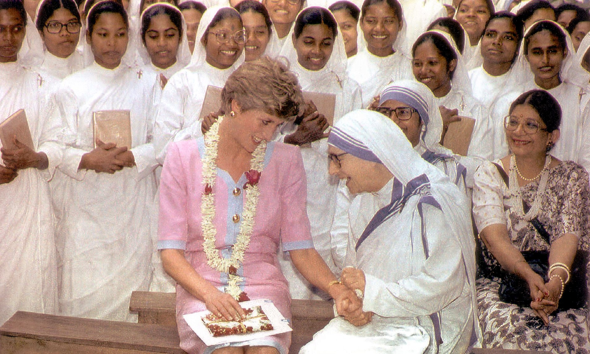

WKA

Yohanes 3:16 menyatakan: "Sebab begitu besar kasih Allah akan dunia ini, sehingga Ia telah mengaruniakan Anak-Nya yang tunggal, supaya setiap orang yang percaya kepada-Nya tidak binasa, melainkan beroleh hidup yang kekal." Dalam situasi seperti ini, Ratu Diana dapat memuliakan Allah dengan menunjukkan kasih dan belas kasihan kepada sesama, seperti yang dia lakukan dalam pekerjaan amal dan kemanusiaannya. Melalui tindakan belas kasihannya, dia dapat menjadi cermin kasih Allah yang terang bagi banyak orang yang menderita atau terpinggirkan dalam masyarakat. Princess Diana menghidupkan ajaran Yesus dalam Yohanes 3:16 dengan menunjukkan kasih dan empati dengan menjadi saluran kasih dan harapan bagi orang-orang yang membutuhkan. Dia juga menginspirasi orang lain untuk melakukan hal yang sama untuk mewujudkan keadilan sosial dan kemanusiaan.
Semua orang diberi keselamatan oleh Kristus. Dengan hidup sesuai dengan ajaran Kristus, mereka dapat menggunakan keselamatan ini dalam hidup mereka untuk membantu orang lain. Hal ini mencakup menjalani kehidupan yang penuh kasih sayang, belas kasihan, dan pengampunan kepada sesama serta mengabdikan diri secara tulus untuk membantu orang lain. Dengan melakukan hal ini, orang dapat menjadi saksi hidup bagi kasih Kristus di dunia ini, memberi tahu orang lain tentang keselamatan, dan memperluas kerajaan-Nya di seluruh dunia. Oleh karena itu, setiap tindakan dan kata-kata yang dilakukan oleh orang dalam kehidupan sehari-hari mereka dapat digunakan untuk memuji Allah dan menyebarkan anugerah keselamatan yang diberikan melalui Yesus Kristus.
eksegesis yohanes 3:16
Dalam mobilitas sosial, kita menerima apa yang pantas kita terima, tetapi Kristus memberi kita apa yang tidak pantas kita terima.
Karena kasih Allah kepada dunia ini sebegitu besarnya, Dia telah mengorbankan Anak-Nya yang tunggal supaya setiap orang yang percaya kepada-Nya memiliki hidup yang kekal. Ada empat bagian dari ayat ini. Mari kita lihat masing-masing dari empat hal ini: Kasih Allah sebagai Sebab; Anak-Nya sebagai Pemberian; Iman sebagai Syarat; dan Kehidupan, bukan kematian, sebagai Akibat. Carson308 melihat rantai dalam ayat 14-16 yang menunjukkan bahwa karya "Anak Manusia ditinggikan", yang berakar pada kasih Allah, adalah dasar hidup kekal bagi manusia. Orang Yahudi sudah tahu bahwa Allah mengasihi mereka, tetapi mengatakan bahwa Dia juga mengasihi dunia ini adalah hal yang luar biasa. Menurut ajaran Kristen, orang dilarang mengasihi dunia dalam 1 Yohanes 2:15-17, karena dunia ini jahat. Larangan dan pernyataan ini tidak bertentangan, karena kasih Allah adalah kasih yang memberi, sedangkan larangan itu melarang kasih yang mau mengambil untuk dirinya sendiri.Selain itu, tidak ada perbedaan yang ada antara kasih Allah kepada dunia ini dan hukuman yang akan diberikan kepadanya. Karena Dia adalah yang Maha Kasih, yang jahat disayangi. Anak-Nya yang Tunggal, julukan yang menunjukkan nilai yang sangat tinggi, diberikan kepada yang diciptakan untuk menyelamatkan manusia. Dalam Kejadian 22, Abraham menyatakan bahwa dia bersedia mengorbankan Anak-Nya yang tunggal, yang dia sayangi, untuk harga dirinya. Iman adalah satu-satunya syarat untuk memperoleh apa yang dijanjikan dalam ayat ini. Ayat Roma 4:5 menyatakan, "Tetapi kalau ada orang yang tidak bekerja, namun percaya kepada Dia yang membenarkan orang durhaka, imannya diperhitungkan menjadi kebenaran." Tuhan Yesus juga mengatakan dalam Yohanes 5:24 bahwa iman adalah satu-satunya syarat untuk memperoleh keselamatan. "Barangsiapa mendengar perkataan-Ku dan percaya kepada Dia yang mengutus Aku, ia mempunyai hidup yang kekal dan tidak turut dihukum, karena ia sudah pindah dari dalam maut ke dalam hidup," katanya. Akibatnya adalah hidup yang abadi, bukan kebinasaan. Johannes hanya menerima dua opsi—kebinasaan dan hidup yang kekal—bukan yang ketiga. Dalam Markus 9:48, Tuhan Yesus berkata, "...ulat-ulat bangkai tidak mati dan api tidak padam." Dia berbicara tentang keadaan akhir orang yang mati. Namun, hidup yang kekal tidak hanya berlangsung selamanya. Orang-orang dalam Perjanjian Baru memiliki hubungan dengan kehidupan Allah.